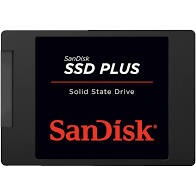
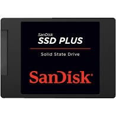

Hårddisk
 

Hårddisken är minst lika viktig som de andra komponenter i datorn. Hårddisken är den del i datorn där vi kan lagra all information. Den traditionella hårddisken var uppbyggd av magnetism, magneter som roterar metall skivor och på så sätt kunna lagra information. Den modernare hårddisken är (SSD) Solid state-diskar. Fördelen med dessa diskar jämfört med den traditionella är att dess storlek är mindre och gör inte lika mycket ljud som de roterade diskarn. En annan fördel är att SSD diskarna är mycket snabbare på att dela information med en hastighet på 3000 Mb/s. Jämfört med den traditionella disken på 150 Mb/s. Eftersom SSD diskarna inte har några rörande eller mekaniska delar så är den mycket mer energisnål jämfört med de roterade hårddiskarna. En fördel med roterande hårddiskarna är att ifall hårddisken skulle kraschar så kan du skicka in den till ett företag så kunde de rädda viktiga filer eller dokument. Detta är väldigt dyr nuförtiden eftersom att företagen har blivit färre, sen är det väldigt ovanligt att SSD diskarna kraschar. Ifall du är intresserad av att köpa en hårddisk skulle du kunna kolla in denna sidan:
klicka på logan!